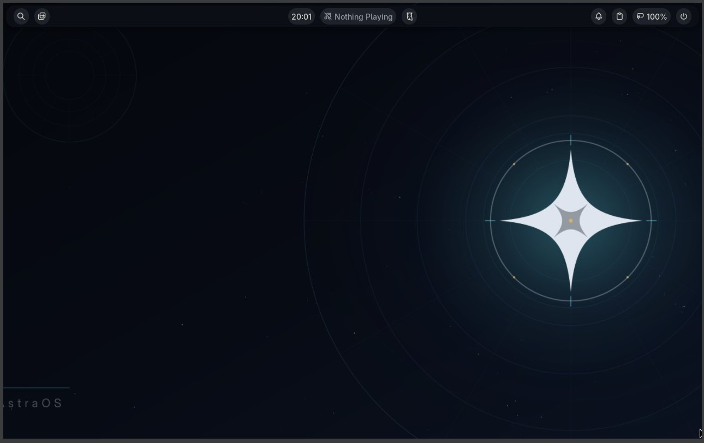
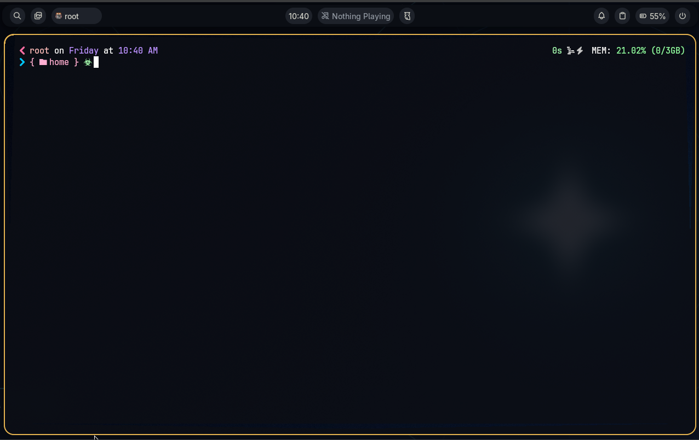
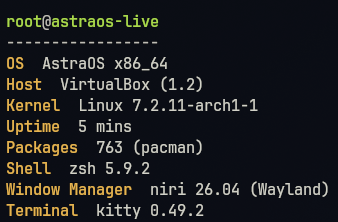
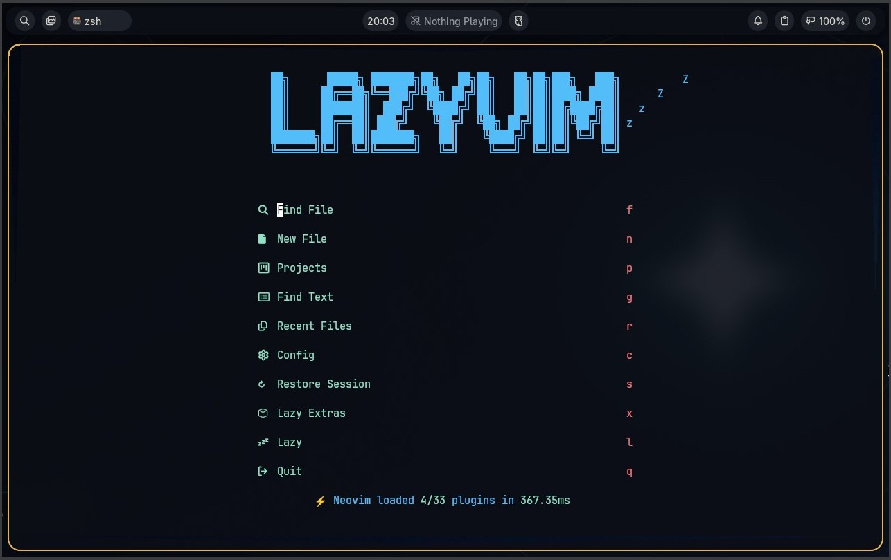

A focused, design-driven, quiet Linux distribution
built around Niri and Noctalia v5.
Every detail of AstraOS exists because someone thought hard about whether it should.
Niri's scrollable Wayland compositor arranges windows in an infinite horizontal ribbon. Fluid, ergonomic, and infinite workspace.
A contemporary status bar, quick settings panel, workspace overview, and notification center unified in the Astral Meridian design system.
Strict read-only storage planning GUI over an unprivileged-to-root engine. Supports Whole Disk Erase, Free Space, and Manual Partitioning.
Minimalist login greeter customized with 7 astronomical themes: Astra Orbital 4K, Aurora, Warm Ember, Deep Lunar, Apollo 8 Earthrise, JWST Cosmic Cliffs, and Hubble Deep Field. Switchable instantly via astra-sddm-theme.
Kitty + Zsh + Oh My Posh pre-configured. A pre-baked, zero-wait Neovim development environment tailored with custom AstraOS palette.
Subvolumes (@, @home, @log, @pkg, @snapshots) with zstd compression. Live ISO boots straight to Niri + Noctalia with auto-launching installer.
A curated system where each component was chosen for coherence, not popularity.
| Component | Upstream Choice | Description |
|---|---|---|
| Base System | Arch Linux | Pinned to Arch Linux Archive (2026/10/18) for predictable, reproducible builds. |
| Compositor | Niri | Scrollable tiling Wayland compositor arranging windows in an infinite horizontal ribbon. |
| Desktop Shell | Noctalia (v5) | Contemporary status bar, quick settings, workspace overview, and notification center. |
| Greeter | SilentSDDM | Minimalist login greeter featuring 7 AstraOS orbital & deep space presets. |
| Installer | Rust + Tauri 2 | Read-only storage planning GUI over an unprivileged-to-root non-interactive Bash engine. |
| Terminal | Kitty + Zsh | GPU-accelerated terminal paired with Oh My Posh (1_shell) and autosuggestions. |
| Editor | Neovim + LazyVim | Pre-baked, zero-wait editor environment tailored with custom AstraOS color scheme. |
| Filesystem | Btrfs | Standard subvolumes (@, @home, @log, @pkg, @snapshots) with zstd compression. |
| Bootloader | GNU GRUB / systemd-boot | UEFI bootloader with automatic multi-boot OS detection via os-prober. |
Screenshots of AstraOS in action. Every pixel is intentional.




AstraOS is tuned strictly for 64-bit UEFI hardware with GPT disk partitioning.
Processor
Intel Core or AMD Ryzen with SSE4.2+ vector extensions. Native multithreaded Wayland rendering.
System Memory
4 GiB minimum, 8 GiB recommended. Niri + Noctalia maintains an exceptionally light idle footprint (~600 MB).
Storage Floor
1 GiB FAT32 ESP (/boot/efi) + 34 GiB Btrfs root with subvolumes (@, @home, @snapshots) and zstd compression.
Firmware & Partitioning
Strict GPT partition table. Secure Boot disabled; Legacy BIOS and CSM disabled.
Graphics Stack
Open-source AMD and Intel Mesa drivers out of the box; NVIDIA Maxwell, Pascal, and Volta supported via pinned 580xx stack.
Connectivity
NetworkManager with iwd backend (nmtui and iwctl). Active internet connection required during installation.
Download the live ISO, write it to a USB, boot in UEFI mode. The desktop is ready in seconds.
Grab the latest ISO from GitHub Releases.
sudo dd if=astraos-*.iso of=/dev/sdX bs=4M status=progress
UEFI mode, Secure Boot off. Launch the installer from the app launcher.